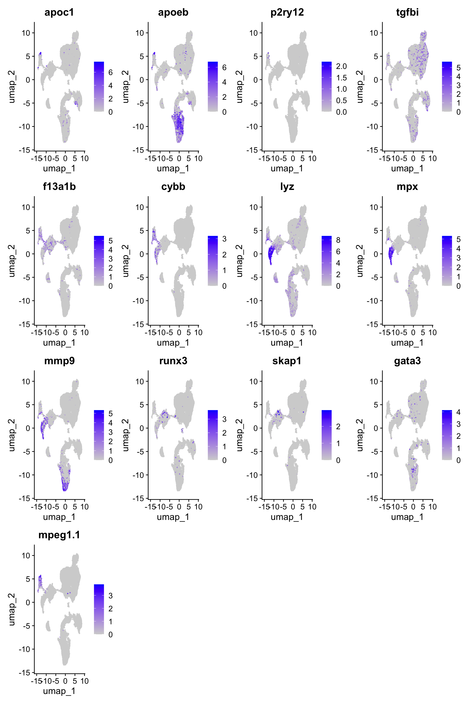
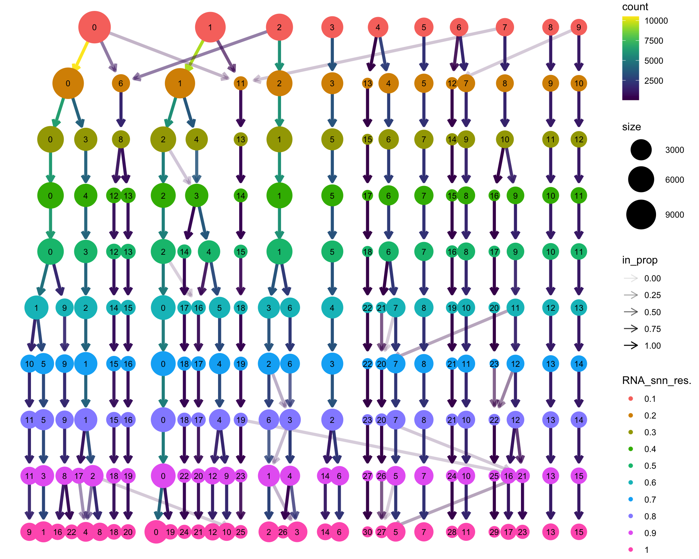
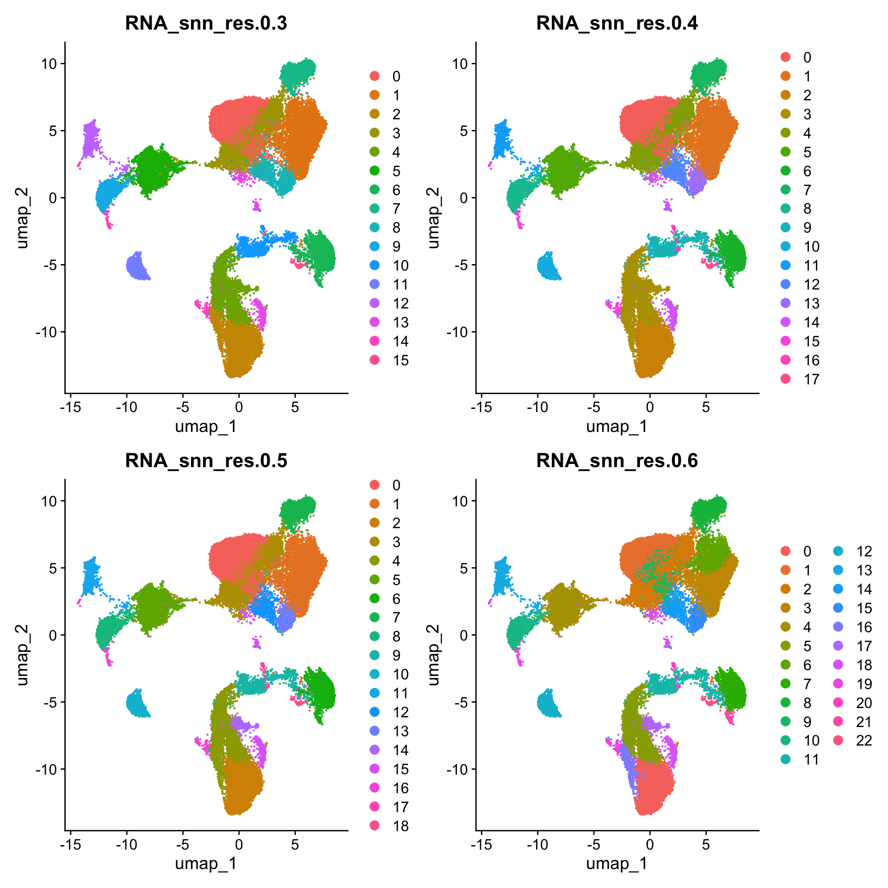
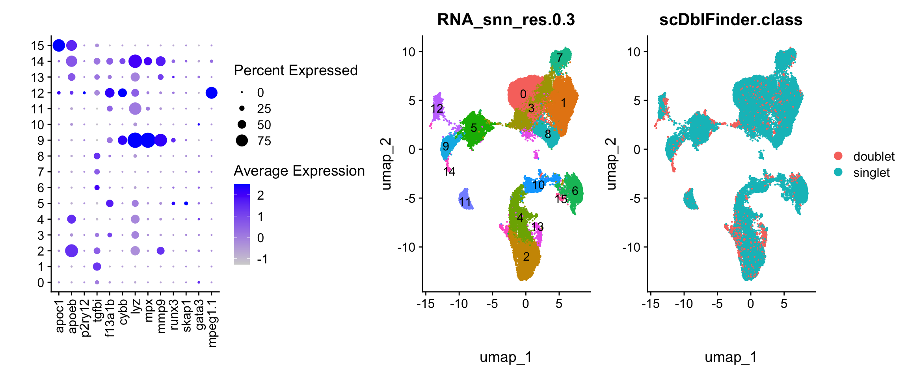
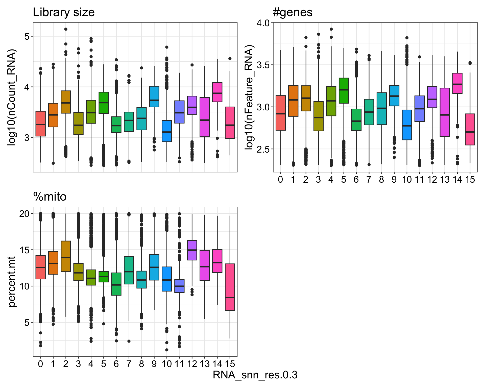
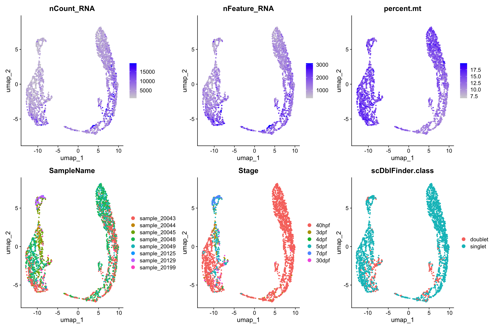
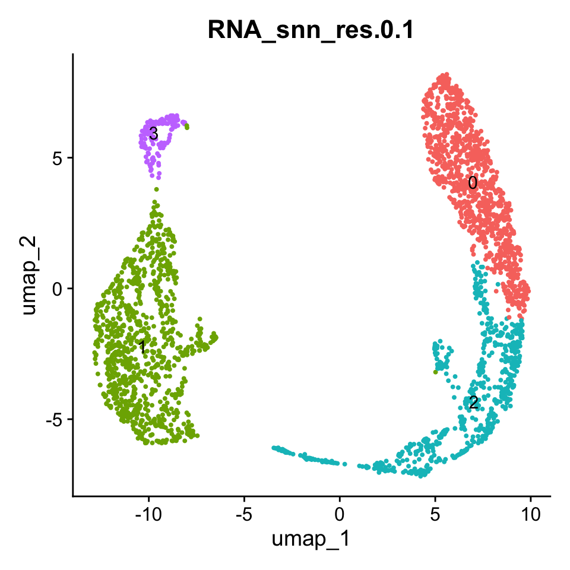
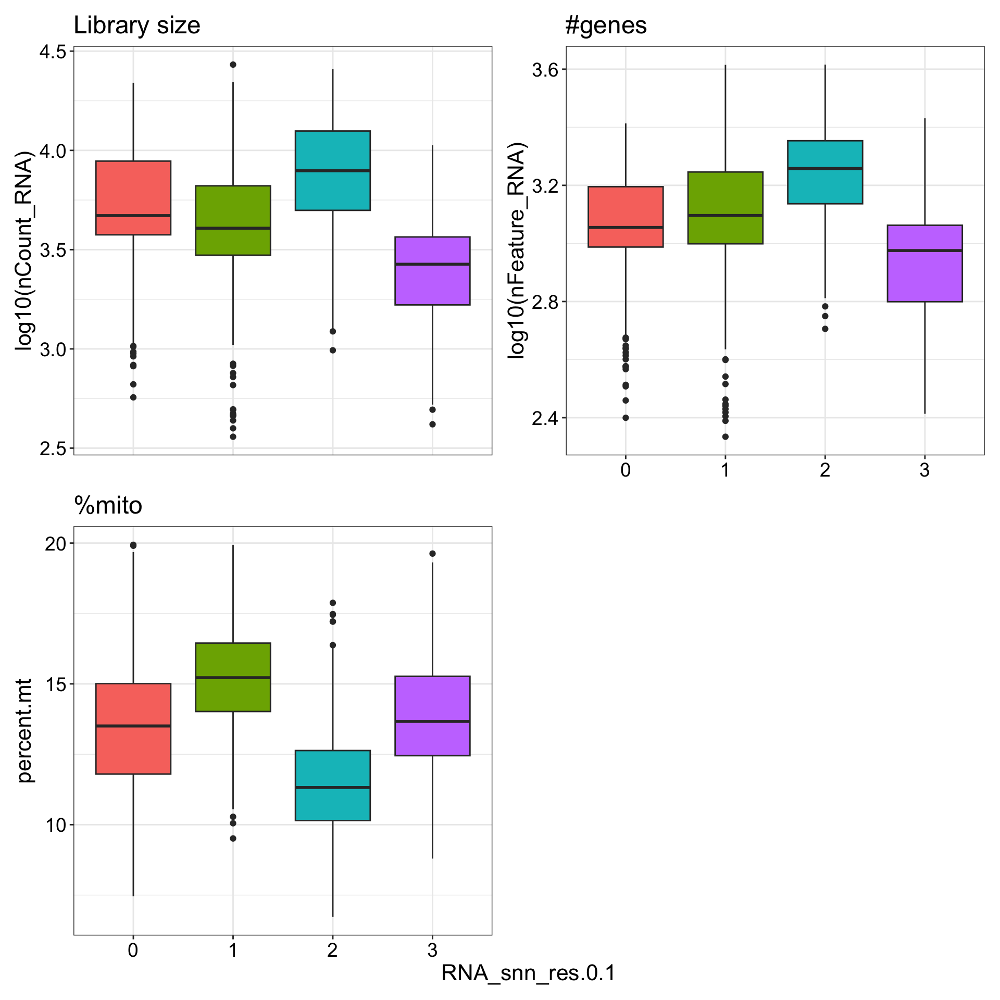
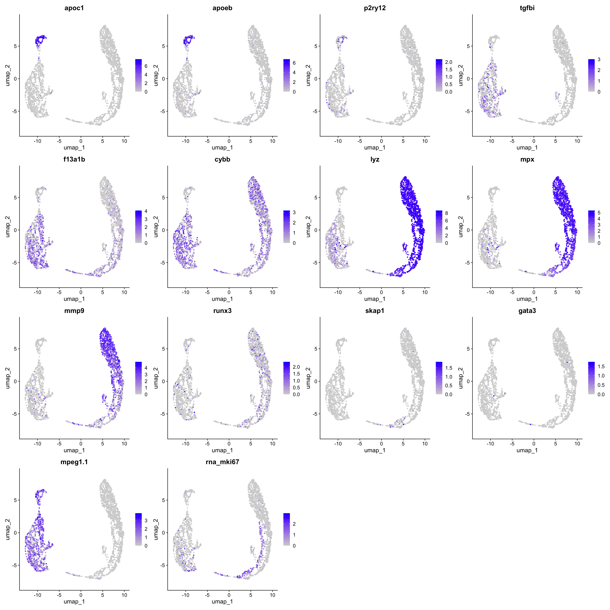
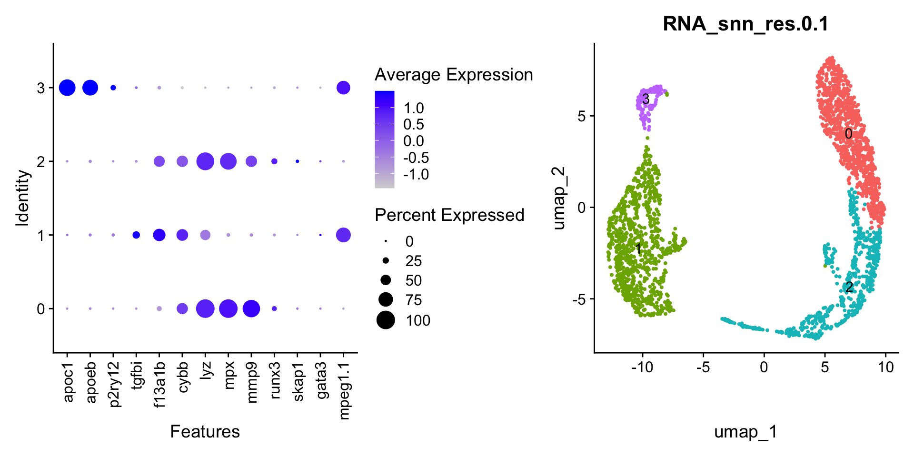

Last updated: 2026-06-01
Checks: 7 0
Knit directory:
Matters_Arising_Shimizu_etal/
This reproducible R Markdown analysis was created with workflowr (version 1.7.1). The Checks tab describes the reproducibility checks that were applied when the results were created. The Past versions tab lists the development history.
Great! Since the R Markdown file has been committed to the Git repository, you know the exact version of the code that produced these results.
Great job! The global environment was empty. Objects defined in the global environment can affect the analysis in your R Markdown file in unknown ways. For reproduciblity it’s best to always run the code in an empty environment.
The command set.seed(20260420) was run prior to running
the code in the R Markdown file. Setting a seed ensures that any results
that rely on randomness, e.g. subsampling or permutations, are
reproducible.
Great job! Recording the operating system, R version, and package versions is critical for reproducibility.
Nice! There were no cached chunks for this analysis, so you can be confident that you successfully produced the results during this run.
Great job! Using relative paths to the files within your workflowr project makes it easier to run your code on other machines.
Great! You are using Git for version control. Tracking code development and connecting the code version to the results is critical for reproducibility.
The results in this page were generated with repository version 8e6f6ec. See the Past versions tab to see a history of the changes made to the R Markdown and HTML files.
Note that you need to be careful to ensure that all relevant files for
the analysis have been committed to Git prior to generating the results
(you can use wflow_publish or
wflow_git_commit). workflowr only checks the R Markdown
file, but you know if there are other scripts or data files that it
depends on. Below is the status of the Git repository when the results
were generated:
Ignored files:
Ignored: .DS_Store
Ignored: .Rhistory
Ignored: .Rproj.user/
Ignored: output/.DS_Store
Ignored: output/data/
Ignored: renv/
Untracked files:
Untracked: analysis/MakeFigures.Rmd
Untracked: output/figures/
Untracked: renv.lock
Unstaged changes:
Modified: .Rprofile
Modified: .gitignore
Modified: _workflowr.yml
Note that any generated files, e.g. HTML, png, CSS, etc., are not included in this status report because it is ok for generated content to have uncommitted changes.
These are the previous versions of the repository in which changes were
made to the R Markdown
(analysis/Gaudi_Timecourse_40hpf_30dpf_makeObject_Level_02_immuneCells.Rmd)
and HTML
(docs/Gaudi_Timecourse_40hpf_30dpf_makeObject_Level_02_immuneCells.html)
files. If you’ve configured a remote Git repository (see
?wflow_git_remote), click on the hyperlinks in the table
below to view the files as they were in that past version.
| File | Version | Author | Date | Message |
|---|---|---|---|---|
| Rmd | 8e6f6ec | Michelle Meier | 2026-06-01 | wflow_publish("analysis/Gaudi_Timecourse_40hpf_30dpf_makeObject_Level_02_immuneCells.Rmd") |
| html | 8826ce8 | Michelle Meier | 2026-06-01 | Build site. |
| Rmd | feee55d | Michelle Meier | 2026-06-01 | wflow_publish("analysis/Gaudi_Timecourse_40hpf_30dpf_makeObject_Level_02_immuneCells.Rmd") |
The purpose of this analysis is to investigate the putative CAM population Shimizu et al have presented in their Matter Arising to Nature. Specifically, this looks at the timecourse dataset, spanning 40hpf - 30dpf.
The first step for pre-processing can be found here. In this markdown, I will subset and reprocess to only include immune cells. I have selected the following genes, which roughly correspond to the genes used in Shimizu et al.
genes_immune_select <- c("apoc1", "apoeb", "p2ry12", #microglia
"tgfbi","f13a1b", "cybb" , #putative CAM
"lyz", "mpx", "mmp9", #neutrophil
"runx3", "skap1", "gata3", #lymphocytes
"mpeg1.1" #MG + Macro
)suppressPackageStartupMessages({
library(here)
library(scran)
library(scater)
library(scuttle)
library(scales)
library(readr)
library(Seurat)
library(ggpubr)
library(tidyverse)
library(qs2)
library(patchwork)
library(simspec)
library(scDblFinder)
library(clustree)
})Warning: package 'scran' was built under R version 4.5.3Warning: package 'SingleCellExperiment' was built under R version 4.5.1Warning: package 'SummarizedExperiment' was built under R version 4.5.1Warning: package 'MatrixGenerics' was built under R version 4.5.1Warning: package 'GenomicRanges' was built under R version 4.5.2Warning: package 'BiocGenerics' was built under R version 4.5.1Warning: package 'S4Vectors' was built under R version 4.5.3Warning: package 'IRanges' was built under R version 4.5.1Warning: package 'Seqinfo' was built under R version 4.5.1Warning: package 'Biobase' was built under R version 4.5.1Warning: package 'scuttle' was built under R version 4.5.1Warning: package 'scDblFinder' was built under R version 4.5.2Level_01_seuratObject <- qs_read(here("output/data/seurat_objects/Timecourse_40hpf_30dpf_Level_01.qs2"))
Level_02_seuratObject_old <- qs_read("/Users/meiermichelle/Library/CloudStorage/OneDrive-PeterMac/HOGAN_LAB/analysis/BAM_quest/output/data/seurat_objects/Timecourse_40hpf_30dpf_Level_02.qs2")plot_sizing <- theme_bw()+ theme(axis.title = element_text(size = 16),
axis.text = element_text(size = 14, colour = "black"),
plot.title = element_text(size = 18),
legend.text = element_text(size = 14),
legend.title = element_blank())
plot_sizing_seurat <- theme(axis.title = element_text(size = 16),
axis.text = element_text(size = 14, colour = "black"),
plot.title = element_text(size = 18),
legend.text = element_text(size = 14))
rotate_x <- theme(axis.text.x = element_text(angle = 90, vjust = 0.5, hjust=1))
strip_fix <- theme(strip.background = element_rect(fill = "white"),
strip.text = element_text(size = 14))#celltype colours
celltype_colours <- c("red2", "black", "grey")
names(celltype_colours) <- c("MG/Macro subpop", "Neutrophil", "MG")
stage.colours <- c( '#e4c6d3','#be7794', '#a95175', '#823e59', '#3f1e2c', "#190c11")
names(stage.colours) <- c('40hpf', '3dpf', '4dpf', '5dpf', '7dpf', "30dpf")
expression_colours <- c("#d9d9d9", "#7a0177")Use the genes we decided on. Make UMAPs first.
FeaturePlot(object = Level_01_seuratObject, features = genes_immune_select)
| Version | Author | Date |
|---|---|---|
| 8826ce8 | Michelle Meier | 2026-06-01 |
Make a dotplot, but first look at some resolutions.
clustree(Level_01_seuratObject)
| Version | Author | Date |
|---|---|---|
| 8826ce8 | Michelle Meier | 2026-06-01 |
Visualise clusters from res 0.3-0.6.
resolutions <- paste0("RNA_snn_res.", seq(0.3, 0.6, 0.1))
DimPlot(object = Level_01_seuratObject, group.by = resolutions, shuffle = T)
| Version | Author | Date |
|---|---|---|
| 8826ce8 | Michelle Meier | 2026-06-01 |
None of these really make a difference for the clusters I think are immune cells. Pick 0.3
p1 <- DotPlot(object = Level_01_seuratObject, features = genes_immune_select, group.by = "RNA_snn_res.0.3") + rotate_x + ylab("") + xlab("")
p2 <- DimPlot(object = Level_01_seuratObject, group.by = "RNA_snn_res.0.3", shuffle = T, label = T) + theme(legend.position = "none")
p3 <- DimPlot(object = Level_01_seuratObject, group.by = "scDblFinder.class", shuffle = T)
p1+p2+p3
| Version | Author | Date |
|---|---|---|
| 8826ce8 | Michelle Meier | 2026-06-01 |
Cluster 14 seems to be a doublet cluster. Cluster 15 seems to express the microglia genes, but is pretty far away from all the other clusters (but UMAP distance is not meaningful, so who knows)
Get cluster metrics.
plot_list <- list()
plot_list[[1]] <- Level_01_seuratObject@meta.data %>%
ggplot(., aes(y = log10(nCount_RNA), x = RNA_snn_res.0.3, fill=RNA_snn_res.0.3)) +
geom_boxplot() +
plot_sizing + theme(legend.position = "none") + ggtitle("Library size")
plot_list[[2]] <- Level_01_seuratObject@meta.data %>%
ggplot(., aes(y = log10(nFeature_RNA), x = RNA_snn_res.0.3, fill=RNA_snn_res.0.3)) +
geom_boxplot() +
plot_sizing + theme(legend.position = "none") + ggtitle("#genes")
plot_list[[3]] <- Level_01_seuratObject@meta.data %>%
ggplot(., aes(y = percent.mt, x = RNA_snn_res.0.3, fill=RNA_snn_res.0.3)) +
geom_boxplot() +
plot_sizing + theme(legend.position = "none") + ggtitle("%mito")
wrap_plots(plot_list, axes = "collect", ncol=2)
| Version | Author | Date |
|---|---|---|
| 8826ce8 | Michelle Meier | 2026-06-01 |
cluster 12 (likely macrophages) higher %mito, active cells
Level_01_seuratObject <- SetIdent(Level_01_seuratObject, value = "RNA_snn_res.0.3")
Level_02_seuratObject <- subset(Level_01_seuratObject, idents = c(9,12))
Level_02_seuratObjectAn object of class Seurat
21725 features across 2725 samples within 1 assay
Active assay: RNA (21725 features, 2000 variable features)
3 layers present: counts, data, scale.data
3 dimensional reductions calculated: pca, css, umapReprocess with the same steps, including css.
Level_02_seuratObject <- NormalizeData(Level_02_seuratObject, verbose = F) %>% #shouldn't be needed but won't hurt
FindVariableFeatures(. , verbose = F) %>%
ScaleData(., split.by = "SampleName",features = rownames(Level_02_seuratObject), verbose = F) %>% #using split by argument because we have massive library size effects
RunPCA(.,npcs = 20, verbose = F)
Level_02_seuratObject <- cluster_sim_spectrum(object = Level_02_seuratObject,
label_tag = "SampleName") Start to do clustering for each sample... Done clustering of sample sample_20043. Done clustering of sample sample_20044. Done clustering of sample sample_20045. Done clustering of sample sample_20048. Done clustering of sample sample_20049. Done clustering of sample sample_20129. Done clustering of sample sample_20199.Finished clustering.The following batch(es) have < 3 clusters and are removed from the ref: sample_20044, sample_20129, sample_20199Calculating average profiles of clusters...Calculating standardized similarities to clusters...Doing z-transformation...Done. Returning results...Warning: Number of dimensions changing from 87 to 19Level_02_seuratObject <- RunUMAP(Level_02_seuratObject,
reduction = "css",
dims = 1:ncol(Embeddings(Level_02_seuratObject, "css")), verbose = F) %>%
FindNeighbors(.,reduction = "css",
dims = 1:ncol(Embeddings(Level_02_seuratObject, "css")), verbose = F) %>%
FindClusters(., resolution = seq(0.1, 1, 0.1), verbose = F)Warning: The default method for RunUMAP has changed from calling Python UMAP via reticulate to the R-native UWOT using the cosine metric
To use Python UMAP via reticulate, set umap.method to 'umap-learn' and metric to 'correlation'
This message will be shown once per sessionplot_list <- list()
plot_list[[1]] <- FeaturePlot(object = Level_02_seuratObject, features = "nCount_RNA", min.cutoff = "q1", max.cutoff = "q99")
plot_list[[2]] <- FeaturePlot(object = Level_02_seuratObject, features = "nFeature_RNA", min.cutoff = "q1", max.cutoff = "q99")
plot_list[[3]] <- FeaturePlot(object = Level_02_seuratObject, features = "percent.mt")
plot_list[[4]] <- DimPlot(object = Level_02_seuratObject, group.by = "SampleName", shuffle = T)
plot_list[[5]] <- DimPlot(object = Level_02_seuratObject, group.by = "Stage", shuffle = T)
plot_list[[6]] <- DimPlot(object = Level_02_seuratObject, group.by = "scDblFinder.class", shuffle = T)
wrap_plots(plot_list, axes = "collect")
| Version | Author | Date |
|---|---|---|
| 8826ce8 | Michelle Meier | 2026-06-01 |
DimPlot(object = Level_02_seuratObject, group.by = "RNA_snn_res.0.1", label = T) + theme(legend.position = "none") 
| Version | Author | Date |
|---|---|---|
| 8826ce8 | Michelle Meier | 2026-06-01 |
Boxplots with metrics
plot_list <- list()
plot_list[[1]] <- Level_02_seuratObject@meta.data %>%
ggplot(., aes(y = log10(nCount_RNA), x = RNA_snn_res.0.1, fill=RNA_snn_res.0.1)) +
geom_boxplot() +
plot_sizing + theme(legend.position = "none") + ggtitle("Library size")
plot_list[[2]] <- Level_02_seuratObject@meta.data %>%
ggplot(., aes(y = log10(nFeature_RNA), x = RNA_snn_res.0.1, fill=RNA_snn_res.0.1)) +
geom_boxplot() +
plot_sizing + theme(legend.position = "none") + ggtitle("#genes")
plot_list[[3]] <- Level_02_seuratObject@meta.data %>%
ggplot(., aes(y = percent.mt, x = RNA_snn_res.0.1, fill=RNA_snn_res.0.1)) +
geom_boxplot() +
plot_sizing + theme(legend.position = "none") + ggtitle("%mito")
wrap_plots(plot_list, axes = "collect", ncol=2)
| Version | Author | Date |
|---|---|---|
| 8826ce8 | Michelle Meier | 2026-06-01 |
FeaturePlot(object = Level_02_seuratObject, features = c(genes_immune_select, "rna_mki67"))
| Version | Author | Date |
|---|---|---|
| 8826ce8 | Michelle Meier | 2026-06-01 |
Make dotplot
p1 <- DotPlot(object = Level_02_seuratObject, features = genes_immune_select, group.by = "RNA_snn_res.0.1")+ rotate_xWarning: Scaling data with a low number of groups may produce misleading
resultsp2 <- DimPlot(object = Level_02_seuratObject, group.by = "RNA_snn_res.0.1", label = T) +theme(legend.position = "none")
p1+p2
| Version | Author | Date |
|---|---|---|
| 8826ce8 | Michelle Meier | 2026-06-01 |
Add annotation based on gene expression pattern
Level_02_seuratObject$prelim_celltype <- case_when(Level_02_seuratObject$RNA_snn_res.0.1 == 1 ~ "MG/Macro subpop",
Level_02_seuratObject$RNA_snn_res.0.1 == 3 ~ "MG",
Level_02_seuratObject$RNA_snn_res.0.1 %in% c(0,2) ~ "Neutrophil")Level_02_seuratObject$prelim_celltype %>% table().
MG MG/Macro subpop Neutrophil
133 941 1651 Add fancy names with name with N.
Level_02_seuratObject$prelim_celltype <- case_when(Level_02_seuratObject$RNA_snn_res.0.1 == 1 ~ "MG/Macro subpop\nn=941",
Level_02_seuratObject$RNA_snn_res.0.1 == 3 ~ "MG\nn=133",
Level_02_seuratObject$RNA_snn_res.0.1 %in% c(0,2) ~ "Neutrophil\nn=1651")
Level_02_seuratObject$prelim_celltype <- as.factor(Level_02_seuratObject$prelim_celltype)cell type vs stage.
table(Level_02_seuratObject$prelim_celltype, Level_02_seuratObject$Stage)
40hpf 3dpf 4dpf 5dpf 7dpf 30dpf
MG\nn=133 0 9 6 39 77 2
MG/Macro subpop\nn=941 635 60 5 193 11 37
Neutrophil\nn=1651 1619 17 1 9 0 5Let’s save this!
filename <- here("output/data/seurat_objects/Timecourse_40hpf_30dpf_Level_02_immuneCells.qs2")
qs_save(object = Level_02_seuratObject, file = filename)
sessionInfo()R version 4.5.0 (2025-04-11)
Platform: aarch64-apple-darwin20
Running under: macOS Sequoia 15.7.4
Matrix products: default
BLAS: /Library/Frameworks/R.framework/Versions/4.5-arm64/Resources/lib/libRblas.0.dylib
LAPACK: /Library/Frameworks/R.framework/Versions/4.5-arm64/Resources/lib/libRlapack.dylib; LAPACK version 3.12.1
locale:
[1] en_US.UTF-8/en_US.UTF-8/en_US.UTF-8/C/en_US.UTF-8/en_US.UTF-8
time zone: Australia/Melbourne
tzcode source: internal
attached base packages:
[1] stats4 stats graphics grDevices datasets utils methods
[8] base
other attached packages:
[1] future_1.70.0 clustree_0.5.1
[3] ggraph_2.2.2 scDblFinder_1.24.10
[5] simspec_0.0.0.9000 patchwork_1.3.2
[7] qs2_0.1.7 lubridate_1.9.5
[9] forcats_1.0.1 stringr_1.5.1
[11] dplyr_1.2.1 purrr_1.2.2
[13] tidyr_1.3.2 tibble_3.3.1
[15] tidyverse_2.0.0 ggpubr_0.6.3
[17] Seurat_5.4.0 SeuratObject_5.4.0
[19] sp_2.2-1 readr_2.2.0
[21] scales_1.4.0 scater_1.38.1
[23] ggplot2_4.0.2 scran_1.38.1
[25] scuttle_1.20.0 SingleCellExperiment_1.32.0
[27] SummarizedExperiment_1.40.0 Biobase_2.70.0
[29] GenomicRanges_1.62.1 Seqinfo_1.0.0
[31] IRanges_2.44.0 S4Vectors_0.48.1
[33] BiocGenerics_0.56.0 generics_0.1.4
[35] MatrixGenerics_1.22.0 matrixStats_1.5.0
[37] here_1.0.2 workflowr_1.7.1
loaded via a namespace (and not attached):
[1] fs_1.6.6 spatstat.sparse_3.1-0 bitops_1.0-9
[4] httr_1.4.7 RColorBrewer_1.1-3 tools_4.5.0
[7] sctransform_0.4.3 backports_1.5.1 R6_2.6.1
[10] lazyeval_0.2.3 uwot_0.2.4 withr_3.0.2
[13] gridExtra_2.3 progressr_0.19.0 cli_3.6.5
[16] spatstat.explore_3.8-0 fastDummies_1.7.5 labeling_0.4.3
[19] sass_0.4.10 S7_0.2.1-1 spatstat.data_3.1-9
[22] ggridges_0.5.7 pbapply_1.7-4 Rsamtools_2.26.0
[25] parallelly_1.47.0 limma_3.66.0 rstudioapi_0.17.1
[28] BiocIO_1.20.0 ica_1.0-3 spatstat.random_3.4-5
[31] car_3.1-5 Matrix_1.7-3 ggbeeswarm_0.7.3
[34] abind_1.4-8 lifecycle_1.0.5 whisker_0.4.1
[37] yaml_2.3.10 edgeR_4.8.2 carData_3.0-6
[40] SparseArray_1.10.10 Rtsne_0.17 grid_4.5.0
[43] promises_1.5.0 dqrng_0.4.1 crayon_1.5.3
[46] miniUI_0.1.2 lattice_0.22-6 beachmat_2.26.0
[49] cowplot_1.2.0 cigarillo_1.0.0 pillar_1.11.1
[52] knitr_1.50 metapod_1.18.0 rjson_0.2.23
[55] xgboost_3.2.1.1 future.apply_1.20.2 codetools_0.2-20
[58] glue_1.8.0 getPass_0.2-4 spatstat.univar_3.1-7
[61] data.table_1.18.2.1 vctrs_0.7.3 png_0.1-9
[64] spam_2.11-3 gtable_0.3.6 cachem_1.1.0
[67] xfun_0.52 S4Arrays_1.10.1 mime_0.13
[70] tidygraph_1.3.1 survival_3.8-3 statmod_1.5.1
[73] bluster_1.20.0 fitdistrplus_1.2-6 ROCR_1.0-12
[76] nlme_3.1-168 RcppAnnoy_0.0.23 GenomeInfoDb_1.46.2
[79] rprojroot_2.1.1 bslib_0.9.0 irlba_2.3.7
[82] vipor_0.4.7 KernSmooth_2.23-26 otel_0.2.0
[85] tidyselect_1.2.1 processx_3.8.6 curl_6.2.2
[88] compiler_4.5.0 git2r_0.36.2 BiocNeighbors_2.4.0
[91] DelayedArray_0.36.1 plotly_4.12.0 stringfish_0.18.0
[94] rtracklayer_1.70.1 checkmate_2.3.4 lmtest_0.9-40
[97] callr_3.7.6 digest_0.6.37 goftest_1.2-3
[100] presto_1.0.0 spatstat.utils_3.2-2 rmarkdown_2.29
[103] XVector_0.50.0 htmltools_0.5.8.1 pkgconfig_2.0.3
[106] fastmap_1.2.0 rlang_1.2.0 htmlwidgets_1.6.4
[109] UCSC.utils_1.6.1 shiny_1.13.0 farver_2.1.2
[112] jquerylib_0.1.4 zoo_1.8-15 jsonlite_2.0.0
[115] BiocParallel_1.44.0 RCurl_1.98-1.18 BiocSingular_1.26.1
[118] magrittr_2.0.3 Formula_1.2-5 dotCall64_1.2
[121] Rcpp_1.0.14 viridis_0.6.5 reticulate_1.46.0
[124] stringi_1.8.7 MASS_7.3-65 plyr_1.8.9
[127] parallel_4.5.0 listenv_0.10.1 ggrepel_0.9.8
[130] deldir_2.0-4 graphlayouts_1.2.3 Biostrings_2.78.0
[133] splines_4.5.0 tensor_1.5.1 hms_1.1.4
[136] locfit_1.5-9.12 ps_1.9.1 igraph_2.2.3
[139] spatstat.geom_3.7-3 ggsignif_0.6.4 RcppHNSW_0.6.0
[142] reshape2_1.4.5 ScaledMatrix_1.18.0 XML_3.99-0.23
[145] evaluate_1.0.3 RcppParallel_5.1.11-2 renv_1.1.4
[148] BiocManager_1.30.27 tweenr_2.0.3 tzdb_0.5.0
[151] httpuv_1.6.16 RANN_2.6.2 polyclip_1.10-7
[154] scattermore_1.2 ggforce_0.5.0 rsvd_1.0.5
[157] broom_1.0.12 xtable_1.8-8 restfulr_0.0.16
[160] RSpectra_0.16-2 rstatix_0.7.3 later_1.4.2
[163] viridisLite_0.4.3 memoise_2.0.1 GenomicAlignments_1.46.0
[166] beeswarm_0.4.0 cluster_2.1.8.1 timechange_0.4.0
[169] globals_0.19.1